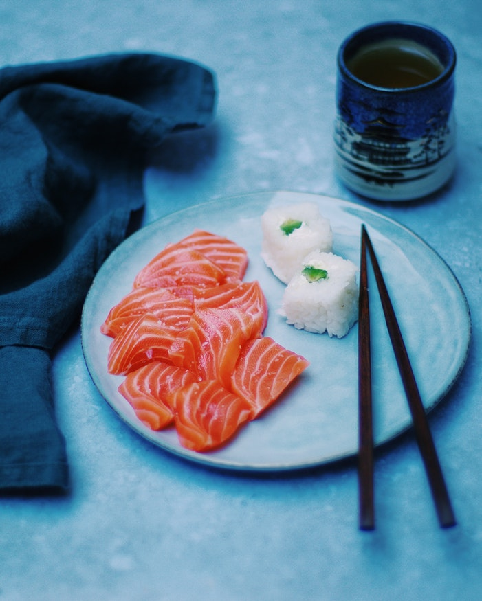
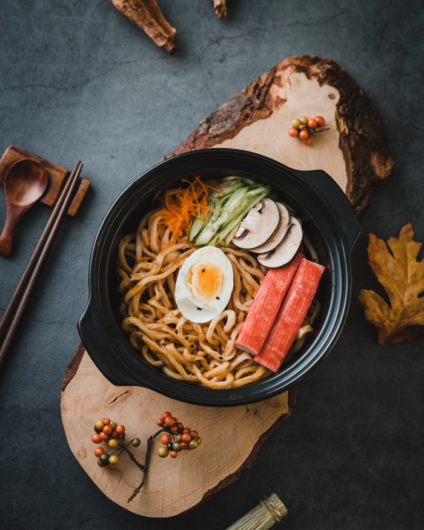
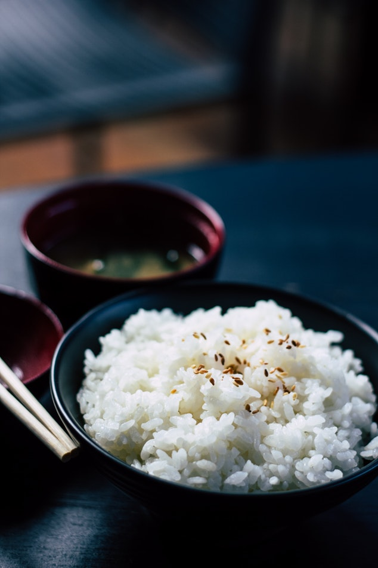

-

Sashimi
- Plat conseiller a : toute la famille
- Temps de préparation : 5 minute
- Pour : 1 personnes
- A emporté : non
- Prix : 7.99€
Plats traditionnelle de sashimi, il peut être accompagner de sushi ou d'autre chose. Le sashimi est frais et couper sur place, il ne peut pas être emporter.
-

Sushi
- Plat conseiller a : toute la famille
- Temps de préparation : 5 minute
- Pour : 3 personnes
- A emporté : oui
- Prix : 4.99€
Le fameux sushi, le plât le plus connu de tout les plât japonais. Il est manger avec des baguettes obligatoirement.
-

Noodle
- Plat conseiller a : toute la famille
- Temps de préparation : 10 minute
- Pour : 2 personnes
- A emporté : oui
- Prix : 6.99€
Noodle tout ce qui a de plus classique, mais les VRAI noodle pas les bon marcher
-

Riz cantonnais
- Plat conseiller a : toute la famille
- Temps de préparation : 20 minute
- Pour : 1 personnes
- A emporté : non
- Prix : 3.99€
Plat de riz cantonnais, pas une spécialité japonaise mais un très bon plât chinois que on a décidé d'intégrer.
Japane
Bienvenue sur Japane, le meilleur restaurant Japonais de tout belgique.

Restaurant japonais
Restaurant avec des spécialité japonaise mais aussi chinoise

Une découverte des avant goûts du Japon
Découvrez le Japon et toute ses coutumes

Décors japonais traditionnelle
L'esprit japonais est présent et le restera toujours. Nous vous promettons que vous vous sentirez comme au Japon